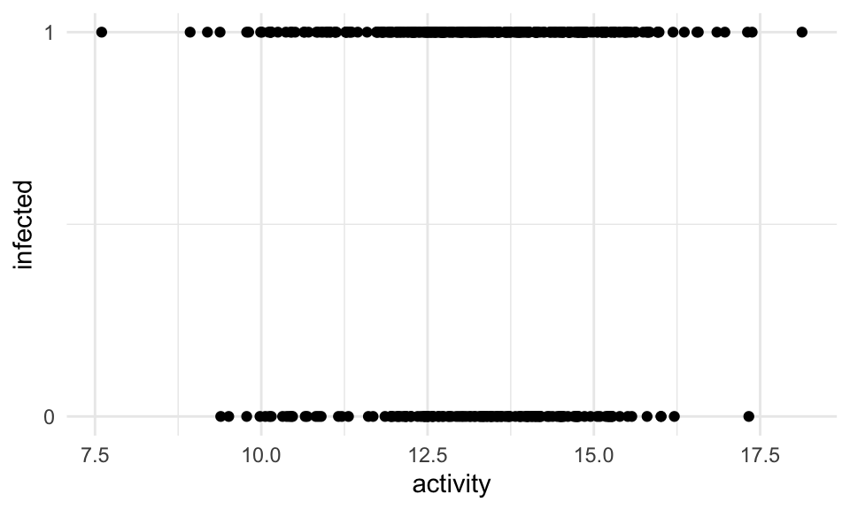
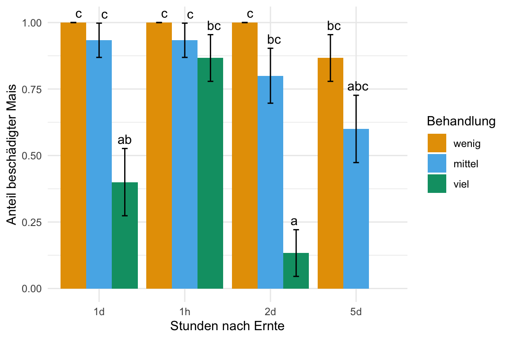

glm(y ~ x_1 + x_2, ..., family = binomial)47 Logistische Regression
Letzte Änderung am 13. January 2024 um 19:50:57
“Sometimes I feel like everybody is a sexy baby and I’m a monster on the hill.” — Taylor Swift, Anti-Hero
Die logistische Regression ist die Regression, wenn wir rüber in die Medizin schauen. Wohl in keinem Bereich der Wissenschaften wird so viel eine logistische Regression gerechnet wie in der Humanmedizin, Epidemiologie oder Pharmazie. Wir haben in der logistischen Regression ein \(0/1\) Outcome als \(y\) vorliegen. Also entweder ist eine Beobachtung erkrankt oder nicht. Meistens beschränkt sich die Betrachtung auf erkrankt (\(1\), ja) oder eben nicht erkrankt (\(0\), nein) bzw. gesund. Wichtig hierbei ist, dass wir eigentlich immer sagen, dass das Schlechte mit \(1\) kodiert wird. Wenn du das machst, dann wird dir die Interpretation der Effektschätzer der logistischen Regression leichter fallen.
Gleich zu Beginn dann nochmal wir werden die logistische Regression in den Agrarwissenschaften eher selten sehen. Im Bereich der Pflanzenwissenschaften kommt die logistische Regression kaum bis gar nicht vor. Im Bereich der Tierwissenschaften schon eher, aber dort dann im Bereich der Tiermedizin und eben wieder Erkrankungen.
Wo wir hingegen dann wieder die logistische Regression brauchen, ist bei der Klassifikation oder eben der Vorhersage von einem binären Ereignis. Dafür bietet sich dann die logistische Regression wieder an. Deshalb werden wir am Ende des Kapitels nochmal was zur Klassifikation machen, obwohl das hier eigentlich nur so halb reinpasst. Wenn du nicht Klassifizieren willst, dann lasse den letzten Abschnitt einfach weg.
Weitere Tutorien für die logistische Regression
- Das Tutorium Logistic Regression by Steven V. Miller erklärt nochmal die logistische Regression von vorne bis hinten, wie ich es hier nicht in dem Detail kann. Wenn du mehr zu logistischen Regression lesen willst, dann ist es eine wirkliche Empfehlung.
47.1 Annahmen an die Daten
Unser gemessenes Outcome \(y\) folgt einer Binomialverteilung. Damit finden wir im Outcome nur \(0\) oder \(1\) Werte. Im folgenden Kapitel zu der multiplen logistischen linearen Regression gehen wir davon aus, dass die Daten in der vorliegenden Form ideal sind. Das heißt wir haben weder fehlende Werte vorliegen, noch haben wir mögliche Ausreißer in den Daten. Auch wollen wir keine Variablen selektieren. Wir nehmen alles was wir haben mit ins Modell. Sollte eine oder mehre Bedingungen nicht zutreffen, dann schaue dir einfach die folgenden Kapitel an.
- Wenn du fehlende Werte in deinen Daten vorliegen hast, dann schaue bitte nochmal in das Kapitel 42 zu Imputation von fehlenden Werten.
- Wenn du denkst, dass du Ausreißer oder auffällige Werte in deinen Daten hast, dann schaue doch bitte nochmal in das Kapitel 41 zu Ausreißer in den Daten.
- Wenn du denkst, dass du zu viele Variablen in deinem Modell hast, dann hilft dir das Kapitel 40 bei der Variablenselektion.
Daher sieht unser Modell wie folgt aus. Wir haben ein \(y\) und \(p\)-mal \(x\). Wobei \(p\) für die Anzahl an Variablen auf der rechten Seite des Modells steht. Im Weiteren folgt unser \(y\) einer Binomailverteilung. Damit finden wir im Outcome nur \(0\) oder \(1\) Werte. Das ist hier sehr wichtig, denn wir wollen ja eine multiple logistische lineare Regression rechnen. In R nutzen wir dazu die Funktion glm() mit der Option family = binomial.
\[ y \sim x_1 + x_2 + ... + x_p \]
Dann würde das Modell in R wie folgt aussehen.
Neben der Möglichkeit, dass wir \(0/1\) im Outcome \(y\) haben, könnten wir auch unser Outcome anders beschreiben. Wir nutzen dann dafür das Wilkinson-Rogers Format welches dann den Anteil an Erfolgen an Fehlschlägen beschreibt. Wir schreiben aber in das Modell die konkrete Anzahl an Erfolgen und Fehlschlägen.
\[ (Success|Failure) \sim x_1 + x_2 + ... + x_p \]
In R würden wir dann die zwei Spalten mit der Anzahl an Erfolgen und Fehlschlägen mit cbind() zusammenfassen und in glm() ergänzen. Daher würden wir dann in R wie folgt schreiben.
glm(cbind(success, failure) ~ x_1 + x_2, ..., family = binomial)Wir können in dem Modell auch Faktoren \(f\) haben, aber es geht hier am Anfang des Kapitels nicht um einen reinen Gruppenvergleich. Das ist ganz wichtig. Wenn du einen Gruppenvergleich rechnen willst, dann musst du in Kapitel 47.8 nochmal nachlesen, wir du dann das Modell weiterverwendest.
47.2 Genutzte R Pakete
Wir wollen folgende R Pakete in diesem Kapitel nutzen.
pacman::p_load(tidyverse, magrittr, conflicted, broom,
parameters, performance, gtsummary, see,
tidymodels, cutpointr, emmeans, multcomp,
conflicted)
conflicts_prefer(yardstick::accuracy)
conflicts_prefer(dplyr::select)
conflicts_prefer(magrittr::extract)
cbbPalette <- c("#000000", "#E69F00", "#56B4E9", "#009E73",
"#F0E442", "#0072B2", "#D55E00", "#CC79A7")Am Ende des Kapitels findest du nochmal den gesamten R Code in einem Rutsch zum selber durchführen oder aber kopieren.
47.3 Daten
In diesem Kapitel nutzen wir die infizierten Ferkel als Beispieldatensatz. Wir haben in dem Datensatz über vierhundert Ferkel untersucht und festgehalten, ob die Ferkel infiziert sind (\(1\), ja) oder nicht infiziert (\(0\), nein). Wir haben daneben noch eine ganze Reihe von Risikofaktoren erhoben. Hier sieht man mal wieder wie wirr die Sprache der Statistik ist. Weil wir rausfinden wollen welche Variable das Risiko für die Infektion erhöht, nennen wir diese Variablen Risikofaktoren. Obwohl die Variablen gar keine kategorialen Spalten sind bzw. nicht alle. So ist das dann in der Statistik, ein verwirrender Begriff jagt den Nächsten.
pig_tbl <- read_excel("data/infected_pigs.xlsx") Schauen wir uns nochmal einen Ausschnitt der Daten in der Tabelle 47.1 an.
| age | sex | location | activity | crp | frailty | bloodpressure | weight | creatinin | infected |
|---|---|---|---|---|---|---|---|---|---|
| 61 | male | northeast | 15.31 | 22.38 | robust | 62.24 | 19.05 | 4.44 | 1 |
| 53 | male | northwest | 13.01 | 18.64 | robust | 54.21 | 17.68 | 3.87 | 1 |
| 66 | female | northeast | 11.31 | 18.76 | robust | 57.94 | 16.76 | 3.01 | 0 |
| 59 | female | north | 13.33 | 19.37 | robust | 56.15 | 19.05 | 4.35 | 1 |
| 63 | male | northwest | 14.71 | 21.57 | robust | 55.38 | 18.44 | 5.27 | 1 |
| 55 | male | northwest | 15.81 | 21.45 | robust | 60.29 | 18.42 | 4.78 | 1 |
| … | … | … | … | … | … | … | … | … | … |
| 54 | female | north | 11.82 | 21.5 | pre-frail | 55.32 | 19.75 | 3.92 | 1 |
| 56 | male | west | 13.91 | 20.8 | frail | 58.37 | 17.28 | 7.44 | 0 |
| 57 | male | northwest | 12.49 | 21.95 | pre-frail | 56.66 | 16.86 | 2.44 | 1 |
| 61 | male | northwest | 15.26 | 23.1 | robust | 57.18 | 15.55 | 3.08 | 1 |
| 59 | female | north | 13.13 | 20.23 | robust | 56.64 | 18.6 | 3.41 | 0 |
| 63 | female | north | 10.01 | 19.89 | robust | 57.46 | 18.6 | 4.2 | 1 |
In dem nächsten Abschnitt werden wir die Daten nutzen um rauszufinden welche Variablen einen Einfluss auf den Infektionsstatus der Ferkel hat.
47.4 Theoretischer Hintergrund
Wir schaffen wir es, durch einen \(0/1\) Outcome auf der y-Achse eine gerade Linie durch die Punkte zu zeichnen und die Koeffiziente dieser Gerade zu bestimmen? Immerhin gibt es ja gar keine Werte zwischen \(0\) und \(1\). In Abbildung 47.1 sehen wir beispielhaft den Zusammenhang zwischen dem Infektionsstatus und der Aktivität der Ferkel. Wir haben zwei horizontale Linien. Wie zeichen wir jetzt da eine Gerade durch?
ggplot(pig_tbl, aes(x = activity, y = infected)) +
theme_minimal() +
geom_point() +
scale_y_continuous(breaks = c(0, 1))
In der folgenden Abbildung 47.2 sehen wir nochmal die gleiche Darstellung der Daten aus dem R Paket {see} und der entsprechenden Funktion geom_binomdensity(). Leider ist die Nutzung nicht so, wie du {ggplot} gewohnt bist, aber für die Darstellung hier ist es sehr angenehm die Verteilung der Beobachtungen besser zu sehen. Du siehst hier einmal ganz gut, wie sich die \(0/1\)-Werte für die infizierten Schweine über die Werte der Aktivität anordnen. In der obigen Abbdilung sind dann eben die Punkte alle übereinander angeordnet.
ggplot() +
theme_minimal() +
geom_binomdensity(pig_tbl, x = "activity", y = "infected") +
scale_y_continuous(breaks = c(0, 1))Der Trick hierbei ist wieder die Transformation des Zusammenhangs von \(y \sim x\) auf einen \(\log\)-scale. Das heißt wir Rechnen nicht mit den \(0/1\) Werten sondern transformieren den gesamten Zusammenhang. Das ist wichtig, den es gibt einen Unterschied zwischen der Transformation von \(y\) und der Transformation die hier gemeint ist. Wir halten fest, wir rechnen also nciht auf der ursprünglichen Skala der Daten sondern auf der \(\log\)-scale. Allgemeiner wird auch von der link-Funktion gesprochen, da wir ja verschiedene Möglichkeiten der Transformation des Zusammenhangs haben.
Hier gibt es nur die Kurzfassung der link-Funktion. Dormann (2013) liefert hierzu in Kapitel 7.1.3 nochmal ein Einführung in das Thema.
Wir gehen wir also vor. Zuerst Modellieren wir die Wahrscheinlichkeit für den Eintritt des Ereignisses. Wir machen also aus unseren binären \(0/1\) Daten eine Wahrscheinlichkeit für den Eintritt von 1.
\[ Y \rightarrow Pr(Y = 1) \]
Damit haben wir schon was erreicht den \(Pr(Y = 1)\) liegt zwischen \(0\) und \(1\). Damit haben wir also schon Werte dazwischen. Wenn wir aber normalverteilte Residuen haben wollen, dann müssen unsere Werte von \(-\infty\) bis \(+\infty\) laufen können. Daher rechnen wir im Weiteren die Chance.
\[ \cfrac{Pr(y = 1)}{1 - Pr(Y = 1)} \] Die Chance (eng. Odds) für das Eintreten von \(Y=1\) ist eben die Wahrscheinlichkeit für das Eintreten geteilt durch die Gegenwahrscheinlichkeit. Das ist schon besser, denn damit liegen unsere transformierten Werte für den Zusammenhang schon zwischen \(0\) und \(+\infty\). Wenn wir jetzt noch den \(\log\) von den Chancen rechnen, dann haben wir schon fast alles was wir brauchen.
\[ \log\left(\cfrac{Pr(y = 1)}{1 - Pr(Y = 1)}\right) \]
Der Logarithmus der Chance liegt dann zwischen \(-\infty\) und \(+\infty\). Deshalb spricht man auch von den \(\log\)-Odds einer logistischen Regression. Auch sieht man hier woher das logistisch kommt. Wir beschreiben im Namen auch gleich die Transformation mit. Am ende kommen wir somit dann auf folgendes Modell.
\[ \log\left(\cfrac{Pr(y = 1)}{1 - Pr(Y = 1)}\right) = \beta_0 + \beta_1 x_1 + ... + \beta_p x_p + \epsilon \] Vielleicht ist dir der Begriff Wahrscheinlichkeit und der Unterschied zur Chance nicht mehr so präsent. Deshalb hier nochmal als Wiederholung oder Auffrischung.
- Eine Wahrscheinlichkeit beschreibt dem Anteil an Allen. Zum Beispiel den Anteil Gewinner an allen Teilnehmern. Den Anteil Personen mit Therapieerfolg an allen Studienteilnehmern.
- Eine Chance oder (eng. Odds) beschreibt ein Verhältnis. Somit das Verhältnis Gewinner zu Nichtgewinner. Oder das Verhältnis Personen mit Therapieerfolg zu Personen ohne Therapieerfolg
Nochmal an einem Zahlenbeispiel. Wenn wir ein Glücksspiel haben, in dem es 2 Kombinationen gibt die gewinnen und drei 3 Kombinationen die verlieren, dann haben wir eine Wahrscheinlichkeit zu gewinnen von \(2 / 5 = 0.40 = 40\%\). Wenn wir die Chance zu gewinnen ausrechnen erhalten wir \(2:3 = 0.67 = 67\%\). Wir sehen es gibt einen deutlichen Unterschied zwischen Chance und Wahrscheinlichkeit. Wenn wir große Fallzahl haben bzw. kleine Wahrscheinlichkeiten, dann ist der Unterschied nicht mehr so drastisch. Aber von einer Gleichkeit von Wahrscheinlichkeit und Chance zu sprechen kann nicht ausgegangen werden.
Was ist nun das Problem? Wir erhalten aus einer logistischen Regression \(\log\)-Odds wieder. Der Effektchätzer ist also eine Chance. Wir werden aber das Ergebnis wie eine Wahrscheinlichkeit interpretieren. Diese Diskrepanz ist wenigen bekannt und ein Grund, warum wir in der Medizin immer uns daran erinnern müssen, was wir eigentlich mit der logistischen Regression aussagen können.
47.5 Modellierung
Die Modellerierung der logistischen Regression ist sehr einfach. Wir nutzen wieder die Formelschreibweise im glm() um unsere Variablen zu definieren. Wenn unser Outcome nicht binär ist, dann jammert R und gibt uns einen Fehler aus. Ich kann hier nur dringlichst raten, das Outcome in \(0/1\) zu kodieren mit dem Schlechten als \(1\).
Das glm() muss dann noch wissen, dass es eine logistische Regression rechnen soll. Das machen wir in dem wir als Verteilungsfamilie die Binomialverteilung auswählen. Wir geben also an family = binomial und schon können wir das volle Modell fitten.
log_fit <- glm(infected ~ age + sex + location + activity + crp +
frailty + bloodpressure + weight + creatinin,
data = pig_tbl, family = binomial)Das war extrem kurz und scherzlos. Also können wir dann auch ganz kurz schauen, ob das Modell einigermaßen funktioniert hat.
47.6 Performance des Modells
Nachdem wir das Modell gefittet haben, wollen wir uns nochmal das \(R^2\) wiedergeben lassen um zu entscheiden, ob unser Modell einigermaßen funktioniert hat. Dieser Abschnitt ist sehr kurz. Wir haben leider nur sehr wenige Möglichkeiten um ein logistischen Modell zu bewerten.
r2(log_fit)# R2 for Logistic Regression
Tjur's R2: 0.285Ja, so viel Varianz erklären wir nicht, aber wenn du ein wenig im Internet suchst, dann wirst du feststellen, dass das Bestimmtheitsmaß so eine Sache in glm()’s ist. Wir sind aber einigermaßen zufrieden. Eventuell würde eine Variablenselektion hier helfen, aber das ist nicht Inhalt dieses Kapitels.
In Abbildung 47.3 schauen wir nochmal auf die Residuen und die möglichen Ausreißer. Wieder sehen beide Plots einigermaßen in Ordnung aus. Die Abbildungen sind jetzt nicht die Besten, aber ich würde hier auch anhand der Diagnoseplots nicht die Modellierung verwerfen.
check_model(log_fit, colors = cbbPalette[6:8],
check = c("qq", "outliers")) 
check_model().47.7 Interpretation des Modells
Zu Interpretation schauen wir uns wie immer nicht die rohe Ausgabe an, sondern lassen uns die Ausgabe mit der Funktion model_parameters() aus dem R Paket {parameters} wiedergeben. Wir müssen noch die Option exponentiate = TRUE wählen, damit unsere Koeffizienten nicht als \(\log\)-Odds sondern als Odds wiedergeben werden. Korrekterweise erhalten wir die Odds ratio wieder was wir auch als \(OR\) angegeben.
model_parameters(log_fit, exponentiate = TRUE)Parameter | Odds Ratio | SE | 95% CI | z | p
----------------------------------------------------------------------------
(Intercept) | 2.91e-11 | 1.24e-10 | [0.00, 0.00] | -5.69 | < .001
age | 1.00 | 0.03 | [0.95, 1.06] | 0.16 | 0.872
sex [male] | 0.74 | 0.26 | [0.37, 1.48] | -0.84 | 0.398
location [northeast] | 1.07 | 0.40 | [0.52, 2.22] | 0.19 | 0.852
location [northwest] | 0.62 | 0.20 | [0.33, 1.17] | -1.47 | 0.142
location [west] | 0.76 | 0.28 | [0.37, 1.56] | -0.75 | 0.450
activity | 1.05 | 0.10 | [0.87, 1.27] | 0.51 | 0.612
crp | 2.64 | 0.29 | [2.14, 3.32] | 8.70 | < .001
frailty [pre-frail] | 1.12 | 0.46 | [0.49, 2.48] | 0.27 | 0.788
frailty [robust] | 0.81 | 0.31 | [0.37, 1.72] | -0.54 | 0.588
bloodpressure | 1.09 | 0.04 | [1.01, 1.17] | 2.09 | 0.037
weight | 1.00 | 0.09 | [0.85, 1.19] | 0.06 | 0.955
creatinin | 1.12 | 0.10 | [0.94, 1.33] | 1.23 | 0.218 Wie interpretieren wir nun das \(OR\) einer logistischen Regression? Wenn wir darauf gechtet haben, dass wir mit \(1\) das Schlechte meinen, dann können wir wir folgt mit dem \(OR\) sprechen. Wenn wir ein \(OR > 1\) haben, dann haben wir ein Risiko vorliegen. Die Variable mit einem \(OR\) größer als \(1\) wird die Chance auf den Eintritt des schlechten Ereignisses erhöhen. Wenn wir ein \(OR < 1\) haben, dann sprechen wir von einem protektiven Faktor. Die Variable mit einem \(OR\) kleiner \(1\) wird vor dem Eintreten des schlechten Ereignisses schützen. Schauen wir uns den Zusammenhang mal im Detail für die Ferkeldaten an.
(intercept)beschreibt den Intercept der logistischen Regression. Wenn wir mehr als eine simple Regression vorliegen haben, wie in diesem Fall, dann ist der Intercept schwer zu interpretieren. Wir konzentrieren uns auf die Effekte der anderen Variablen.sexbeschreibt den Effekt der männlichen Ferkel zu den weiblichen Ferkeln. Daher haben männliche Ferkel eine \(2.75\) höhere Chance infiziert zu werden als weibliche Ferkel.location [northeast],location [northwest]undlocation [west]beschreibt den Unterschied zurlocation [north]. Alle Orte haben eine geringere Chance für eine Infektion zum Vergleich der Bauernhöfe im Norden. Zwar ist keiner der Effekte signifikant, aber ein interessantes Ergebnis ist es allemal.activitybeschreibt den Effekt der Aktivität der Ferkel. Wenn sich die Ferkel mehr bewegen, dann ist die Chance für eine Infektion gemindert.crpbeschreibt den Effekt des CRP-Wertes auf den Infektionsgrad. Pro Einheit CRP steigt die Chance einer Infektion um \(2.97\) an. Das ist schon ein beachtlicher Wert.frailtybeschreibt die Gebrechlichkeit der Ferkel. Hier müssen wir wieder schauen, zu welchem Level vonfrailtywir vergleichen. Hier vergleichen wir zufrail. Also dem höchsten Gebrechlichkeitgrad. Ferkel die weniger gebrechlich sind, haben eine niedrigere Chance zu erkranken.bloodpressure,weightundcreatininsind alles Variablen, mit einem \(OR\) größer als \(1\) und somit alles Riskovariablen. Hier sind zwar die \(OR\) relativ klein, aber das muss erstmal nichts heißen, da die \(OR\) ja hier die Änderung für eine Einheit von \(x\) beschreiben. Deshalb musst du immer schauen, wie die Einheiten von kontinuierlichen kodiert Variablen sind.
Kommen wir nochmal zu den gänigen Tabellen für die Zusammenfassung eines Ergebnisses einer logistischen Regression. Teilweise sind diese Tabellen so generisch und häufiog verwendet, dass wir schon einen Begriff für diese Tabellen haben. In Tabelle 47.2 siehst du die table 1 für die Übersicht aller Risikovariablen aufgeteilt nach dem Infektionsstatus. Diese Art der Tabellendarstellung ist so grundlegend für eine medizinische Veröffentlichung, dass sich eben der Begriff table 1 etabliert hat. Fast jede medizinische Veröffentlichung hat als erste Tabelle diese Art von Tabelle angegeben. Hierbei ist wichtig, dass die \(p\)-Werte alle nur aus einem einfachen statistischen Test stammen. Die \(p\)-Werte einer multiplen logistischen Regression werden daher immer anders sein.
pig_tbl %>% tbl_summary(by = infected) %>% add_p() %>% as_flex_table()Characteristic | 0, N = 1361 | 1, N = 2761 | p-value2 |
|---|---|---|---|
age | 59.5 (57.0, 63.0) | 60.0 (57.0, 63.0) | 0.9 |
sex | 0.2 | ||
female | 47 (35%) | 114 (41%) | |
male | 89 (65%) | 162 (59%) | |
location | 0.3 | ||
north | 36 (26%) | 85 (31%) | |
northeast | 23 (17%) | 61 (22%) | |
northwest | 48 (35%) | 76 (28%) | |
west | 29 (21%) | 54 (20%) | |
activity | 13.40 (12.25, 14.34) | 13.24 (12.28, 14.54) | 0.8 |
crp | 19.12 (18.13, 19.83) | 20.57 (19.77, 21.46) | <0.001 |
frailty | 0.5 | ||
frail | 18 (13%) | 37 (13%) | |
pre-frail | 42 (31%) | 101 (37%) | |
robust | 76 (56%) | 138 (50%) | |
bloodpressure | 56.2 (54.3, 58.5) | 57.2 (55.1, 59.6) | 0.021 |
weight | 18.61 (17.34, 19.41) | 18.32 (17.19, 19.60) | 0.8 |
creatinin | 4.85 (3.67, 5.93) | 4.86 (4.06, 5.85) | 0.3 |
1Median (IQR); n (%) | |||
2Wilcoxon rank sum test; Pearson's Chi-squared test | |||
In Tabelle 47.3 siehst du nochmal für eine Auswahl an Variablen die simplen logistischen Regressionen gerechnet. Du müsst also nicht jede simple logistische Regression selber rechnen, sondern kannst auch die Funktion tbl_uvregression() verwenden. Das R Paket {tbl_summary} erlaubt weitreichende Formatierungsmöglichkeiten. Am bestes schaust du einmal im Tutorial Tutorial: tbl_regression selber nach was du brauchst oder anpassen willst.
pig_tbl%>%
select(infected, age, crp, bloodpressure) %>%
tbl_uvregression(
method = glm,
y = infected,
method.args = list(family = binomial),
exponentiate = TRUE,
pvalue_fun = ~style_pvalue(.x, digits = 2)
) %>% as_flex_table()Characteristic | N | OR1 | 95% CI1 | p-value |
|---|---|---|---|---|
age | 412 | 1.00 | 0.95, 1.04 | 0.88 |
crp | 412 | 2.62 | 2.14, 3.27 | <0.001 |
bloodpressure | 412 | 1.08 | 1.02, 1.15 | 0.013 |
1OR = Odds Ratio, CI = Confidence Interval | ||||
nun gibt es viele Möglichkeiten sich die logistische Regression wiedergeben zu lassen In Tabelle 47.4 siehst du nochmal die Möglichkeit, die dir das R Paket {tbl_summary} bietet. Am Ende ist es dann eine reine Geschmacksfrage, wie wir die Daten dann aufarbeiten wollen.
log_fit %>% tbl_regression(exponentiate = TRUE) %>% as_flex_table()Characteristic | OR1 | 95% CI1 | p-value |
|---|---|---|---|
age | 1.00 | 0.95, 1.06 | 0.9 |
sex | |||
female | — | — | |
male | 0.74 | 0.37, 1.48 | 0.4 |
location | |||
north | — | — | |
northeast | 1.07 | 0.52, 2.22 | 0.9 |
northwest | 0.62 | 0.33, 1.17 | 0.14 |
west | 0.76 | 0.37, 1.56 | 0.5 |
activity | 1.05 | 0.87, 1.27 | 0.6 |
crp | 2.64 | 2.14, 3.32 | <0.001 |
frailty | |||
frail | — | — | |
pre-frail | 1.12 | 0.49, 2.48 | 0.8 |
robust | 0.81 | 0.37, 1.72 | 0.6 |
bloodpressure | 1.09 | 1.01, 1.17 | 0.037 |
weight | 1.00 | 0.85, 1.19 | >0.9 |
creatinin | 1.12 | 0.94, 1.33 | 0.2 |
1OR = Odds Ratio, CI = Confidence Interval | |||
Zum Abschluss wollen wir uns einmal die Ergebnisse des Modellfits als logistischen Gerade für eine simple lineare Regression mit dem Modell \(infected \sim crp\) anschauen. Wie immer können wir uns den Zusammenhang nur in einem simplen Modell anschauen. Im Fall einer multiplen linearen Regresion können wir nicht so viele Dimensionen in einer Grpahik darstellen. Wir fitten also das Modell log_fit_crp wie im folgenden dargestellt.
log_fit_crp <- glm(infected ~ crp, data = pig_tbl, family = binomial)Nun können wir uns mit der Funktion predict() die Wert auf der Geraden wiedergeben lassen. Wenn wir predict() nur so aufrufen, dann erhalten wir die Werte für \(y\) auf der transformierten \(link\)-Scale wieder. Das hilft uns aber nicht weiter, wir haben ja nur 0 und 1 Werte für \(y\) vorliegen.
predict(log_fit_crp, type = "link") %>%
extract(1:10) %>%
round(2) 1 2 3 4 5 6 7 8 9 10
3.19 -0.41 -0.29 0.29 2.41 2.30 -0.08 -0.08 2.72 1.83 Da wir die Werte für die Wahrscheinlichkeit das ein Ferkel infiziert ist, also die Wahrscheinlichkeit \(Pr(infected = 1)\), müssen wir noch die Option type = reponse wählen. So erhalten wir die Wahrscheinlichkeiten wiedergegeben.
predict(log_fit_crp, type = "response") %>%
extract(1:10) %>%
round(2) 1 2 3 4 5 6 7 8 9 10
0.96 0.40 0.43 0.57 0.92 0.91 0.48 0.48 0.94 0.86 Abschließend können wir uns die Gerade auch in der Abbildung 47.4 visualisieren lassen. Auf der x-Achse sehen wir die crp-Werte und auf der y-Achse den Infektionsstatus. Auf der \(reponse\)-scale sehen wir eine S-Kurve. Auf der \(link\)-scale würden wir eine Gerade sehen.
ggplot(pig_tbl, aes(x = crp, y = infected)) +
theme_minimal() +
geom_point() +
geom_line(aes(y = predict(log_fit_crp, type = "response")), color = "red") 
crp.Nun haben wir das Kapitel zur logistischen Regression fast abgeschlossen. Was noch fehlt ist die Besonderheit der Prädiktion im Kontext des maschinellen Lernens. Das machen wir jetzt im folgenden Abschnitt. Wenn dich die logistische Regression nur interessiert hat um einen kausalen Zusammenhang zwischen Einflussvariablen und dem binären Outcome zu modellieren, dann sind wir hier fertig.
47.8 Gruppenvergleich
Häufig ist es ja so, dass wir das Modell nur schätzen um dann einen Gruppenvergleich zu rechnen. Das heißt, dass es uns interessiert, ob es einen Unterschied zwischen den Leveln eines Faktors gegeben dem Outcome \(y\) gibt. Wir machen den Gruppenvergleich jetzt einmal an der Gebrechlichkeit frailty durch. Wir habe die drei Gruppen frail, pre-frail und robust vorliegen. Wir wollen jetzt wissen, ob es einen Unterschied zwischen den Gruppen hinsichtlich dem Infektionsstatus von den Ferkeln gibt.
Wenn du gerade hierher gesprungen bist, nochmal das simple Modell für unseren Gruppenvergleich. Wir haben hier nur einen Faktor frailty mit in dem Modell. Am Ende des Abschnitts findest du dann noch ein Beispiel mit zwei Faktoren zu beschädigten Mais nach der Ernte.
log_fit <- glm(infected ~ frailty, data = pig_tbl, family = binomial)Eigentlich ist es recht einfach. Wir rechnen jetzt als erstes die ANOVA. Hier müssen wir dann einmal den Test angeben, der gerechnet werden soll um die p-Werte zu erhalten. Dann nutze ich noch die Funktion model_parameters() um eine schönere Ausgabe zu erhalten.
log_fit %>%
anova(test = "Chisq") %>%
model_parameters(drop = "NULL")Parameter | df | Deviance | df (error) | Deviance (error) | p
-----------------------------------------------------------------
frailty | 2 | 1.48 | 409 | 521.14 | 0.478
Anova Table (Type 1 tests)Wir sehen, dass die Gebrechlichkeit der Ferkel keinen signifikanten Einfluss auf den Infektionsstatus hat. Dennoch rechnen wir einmal den Gruppenvergleich. Immerhin geht es hier ja auch um die Demonstration.
Im folgenden nutzen wir das R Paket {emmeans} wie folgt. Wenn wir die Wahrscheinlichkeiten wiedergeben haben wollen, dann nutzen wir die Option regrid = "response". In unserem emmeans-Objekt stehen jetzt die Wahrscheinlichkeiten infiziert zu sein für das jeweilige Level von frailty. Wenn wir aber später die Odds ratio benötigen, dann müssen wir die Option type = "response" verwenden. Erstere Option nutze ich später um direkt aus der emmeans Ausgabe ein Säulendiagramm zu erstellen. Auf dem ersten Blick sind beide Ausgaben gleich, aber im Hintergrund werden andere Optionen gesetzt, so dass in folgenden Berechnungen dann was anderes herauskommt.
Mit dieser Option erhalten wir dann ein emmeans-Objekt in dem die Wahrscheinlichkeiten prob hinterlegt sind. Diese Art der Berechnung eignet sich besonders, wenn später ein compact letter dislay visualisiert werden soll.
em_prob_obj <- log_fit %>%
emmeans(~ frailty, regrid = "response")
em_prob_obj frailty prob SE df asymp.LCL asymp.UCL
frail 0.673 0.0633 Inf 0.549 0.797
pre-frail 0.706 0.0381 Inf 0.632 0.781
robust 0.645 0.0327 Inf 0.581 0.709
Confidence level used: 0.95 Mit dieser Option bereiten wir dann die Berechnung von Odds ratios vor. Wir wollen dann auf der ursprünglichen Skala rechnen und nicht auf der Linkfunktion. Wenn du also Odds ratios haben willst, dann musst du diese Option wählen.
em_odds_obj <- log_fit %>%
emmeans(~ frailty, type = "response")
em_odds_obj frailty prob SE df asymp.LCL asymp.UCL
frail 0.673 0.0633 Inf 0.539 0.783
pre-frail 0.706 0.0381 Inf 0.627 0.775
robust 0.645 0.0327 Inf 0.578 0.706
Confidence level used: 0.95
Intervals are back-transformed from the logit scale Achtung, das Objekt sieht jetzt zwar sehr ähnlich aus, aber für die weitere Berechnung macht es dann doch einen Unterschied welchen type du nutzt.
Wenn du un an den Odds ratios und den p-Werten interessiert bist, dann kannst du den Gruppenvergleich mit der Funktion contrast() rechnen. Wir wollen hier alle paarweisen Vergleiche rechnen. Wie immer kannst du auch die Adjustierung anpassen, wenn du möchtest.
em_odds_obj %>%
contrast(method = "pairwise", adjust = "bonferroni") contrast odds.ratio SE df null z.ratio p.value
frail / (pre-frail) 0.855 0.291 Inf 1 -0.460 1.0000
frail / robust 1.132 0.363 Inf 1 0.386 1.0000
(pre-frail) / robust 1.324 0.308 Inf 1 1.208 0.6815
P value adjustment: bonferroni method for 3 tests
Tests are performed on the log odds ratio scale Wir sehen also, dass wir auch hier keine signifikanten Unterschiede vorliegen haben. Jetzt lassen wir uns nochmal das unadjustierte compact letter display wiedergeben. Aber auch in dem unadjustierten Fall finden wir keine signifikanten Unterschiede.
em_odds_obj %>%
cld(Letters = letters, adjust = "none") frailty prob SE df asymp.LCL asymp.UCL .group
robust 0.645 0.0327 Inf 0.578 0.706 a
frail 0.673 0.0633 Inf 0.539 0.783 a
pre-frail 0.706 0.0381 Inf 0.627 0.775 a
Confidence level used: 0.95
Intervals are back-transformed from the logit scale
Tests are performed on the log odds ratio scale
significance level used: alpha = 0.05
NOTE: If two or more means share the same grouping symbol,
then we cannot show them to be different.
But we also did not show them to be the same. Am Ende möchte ich hier nochmal einen Spieldatensatz infected_tbl erstellen indem ich wiederum drei Gruppen miteinander vergleiche. Ich tue mal so als würden wir uns hier zwei Pestizide und eine Kontrolle anschauen. Unser Outcome ist dann, ob wir eine Infektion vorliegen haben oder das Pestizid alles umgebracht hat. Damit haben wir dann unser Outcome infected definiert. Wir bauen uns die Daten so, dass \(80%\) der Beobachtungen in der Kontrolle infiziert sind. In den beiden Behandlungsgruppen sind jeweils \(50%\) und \(30%\) der Beobachtungen nach der Behandlung noch infiziert. Wir haben jeweils zwanzig Pflanzen n_grp beobachtet. Das sind wirklich wenige Beobachtungen für einen \(0/1\) Endpunkt, aber es sollte hier reichen. Dann habe ich noch einen Seed gesetzt, damit auch immer die gleichen Zahlen generiert werden.
set.seed(20231201)
n_grp <- 20
infected_tbl <- tibble(trt = gl(3, n_grp, labels = c("ctrl", "roundUp", "killAll")),
infected = c(rbinom(n_grp, 1, 0.8),
rbinom(n_grp, 1, 0.5),
rbinom(n_grp, 1, 0.2)))Jetzt bauen wir uns wieder unser logistisches Modell zusammen, dass kennst du ja schon. Vorher wollen wir aber nochmal in die Daten schauen. Unser Datensatz hat ja nur ein Outcome und eine Behandlung als Faktor mit drei Leveln bzw. Gruppen. Wir können jetzt einmal nachvollziehen woher die Werte in einer {emmeans}-Ausgabe eigentlich kommen. Schauen wir uns dazu erstmal die Tabelle mit den Infektionen zugeordnet zu den Behandlungen an.
infected_tbl %$%
table(trt, infected) infected
trt 0 1
ctrl 5 15
roundUp 12 8
killAll 16 4Jetzt berechnen wir einmal die Anteile der Infektionen in den jeweiligen Behandlungen. Wir würden ja erwarten, dass wir \(80%\), \(50%\) und \(20%\) vorfinden, aber da wir nur ein kleinen Fallzahl simuliert haben, ergibt sich natürlich eine Abweichung. Wir finden nämlich in den Daten für ctrl gleich \(15/20 = 0.75\), für roundUp gleich \(8/20 = 0.4\) und für killAll gleich \(4/20 = 0.2\) anteilig Infektionen. Finden wir diese Zahlen auch in {emmeans} wieder?
Als erstes bauen wir uns wieder ein Modell der logistischen Regression.
infected_log_fit <- glm(infected ~ trt, data = infected_tbl, family = "binomial")Dann stecken wir das Modell einmal in emmeans() und schauen uns die Ausgabe an und nutzen die Option regrid = "response" um uns Wahrscheinlichkeiten wiedergeben zu lassen.
infected_log_fit %>%
emmeans(~ trt, regrid = "response") trt prob SE df asymp.LCL asymp.UCL
ctrl 0.75 0.0968 Inf 0.5602 0.940
roundUp 0.40 0.1095 Inf 0.1853 0.615
killAll 0.20 0.0894 Inf 0.0247 0.375
Confidence level used: 0.95 Und tatsächlich, wir finden die gleichen Anteile in der Ausgabe wieder, wie wir auch in unseren Daten vorab aus der Tabelle berechnet haben. Wir erhalten also den Anteil der 1-sen in einem Outcome aus der Funktion emmeans() wieder. Der Anteil an 1-sen ist ja auch nichts anderes als der Mittelwert des Outcomes für die Spalte.
Im nächsten Schritt wollen wir einmal die Odds ratios verstehen. Dafür erstmal den Aufruf in emmeans() und dann schauen wir einmal in die Ausgabe. Wir wollen jetzt die Odds ratios einmal händisch berechnen.
infected_log_fit %>%
emmeans(~ trt, type = "response") %>%
pairs() contrast odds.ratio SE df null z.ratio p.value
ctrl / roundUp 4.50 3.10 Inf 1 2.182 0.0742
ctrl / killAll 12.00 9.13 Inf 1 3.265 0.0031
roundUp / killAll 2.67 1.92 Inf 1 1.359 0.3626
P value adjustment: tukey method for comparing a family of 3 estimates
Tests are performed on the log odds ratio scale Wir wissen ja die Anteile der 1-sen in der Kontrollgruppe ctrl mit \(0.75\) sowie den Anteil an 1-sen in der Behandlungsgruppe roundUp mit \(0.4\). Wir haben die Werte ja oben in der Tabelle bestimmt. Jetzt können wir die Odds mit \(Odds = p/(1-p)\) für die beiden Gruppen berechnen und dann den Quotienten als Odds ratio berechnen.
\[ ctrl/roundUp = \cfrac{0.75}{0.25}/\cfrac{0.4}{0.6} = 4.5 \]
Wie wir sehen, passen die Zahlen. Wir können jetzt auch für die Behandlungsgruppe killAll mit einem Anteil an 1-sen von \(0.2\) weitermachen. Auch hier berechnen wir erst die Odds und dann den Quotienten aus den beiden Odds.
\[ ctrl/killAll = \cfrac{0.75}{0.25}/\cfrac{0.2}{0.8} = 12 \]
Dann nochmal als Überprüfung den letzten Wert für den Vergleich von roundUp zu killAll.
\[ roundUp/killAll = \cfrac{0.4}{0.6}/\cfrac{0.2}{0.8} = 2.67 \]
Nun könntest du einwenden, dass Odds ratios nicht so einfach zu interpretieren sind und du eigentlich nur wissen willst um welchen Faktor mehr oder weniger Infizierte es in einer Gruppe gibt. Also kein Chancenverhältnis sondern eben einfach ein Wahrscheinlichkeitsverhältnis. Du willst also sagen, dass in der Kontrollgruppe x-fach mehr oder weniger infizierte Beobachtungen auftauchen. Damit willst du die Wahrscheinlichkeiten aus der Tabelle weiter oben in ein Verhätnis setzen. Daher willst du folgende Zusammenhänge berechnen.
\[ \cfrac{ctrl}{roundUp} = \cfrac{0.75}{0.4} = 1.88 \]
\[ \cfrac{ctrl}{killAll} = \cfrac{0.75}{0.2} = 3.75 \]
\[ \cfrac{roundUp}{killAll} = \cfrac{0.4}{0.2} = 2.00 \]
Wir können also sagen, dass wir in der Kontrolle ungefähr 1.88 mal mehr Infizierte haben als in der Behandlung roundUp. Oder aber, dass wir in der Kontrolle 3.75 mal mehr Infizierte haben als in der Behandlung killAll Um solche Zahlen zu berechnen, nutzen wir die Poisson Regression auf unseren \(0/1\)-Daten. Dafür müssen wir einmal die Option family = "poisson" setzen.
infected_pois_fit <- glm(infected ~ trt, data = infected_tbl, family = "poisson")Dann können wir auch schon die Funktion emmeans() anwenden, um uns einmal die Wahrscheinlichkeitsverhältnisse als ratio wiedergeben zu lassen. Wie immer kannst du natürlich den Fit auch erstmal in ein eigenes Objekt stecken und dann noch andere Funktionen in {emmeans} nutzen. Wie du gleich siehst, haben wir aber auch hier keine signifikanten Unterschiede zwischen den Gruppen.
infected_pois_fit %>%
emmeans(~ trt, type = "response") %>%
pairs() contrast ratio SE df null z.ratio p.value
ctrl / roundUp 1.88 0.821 Inf 1 1.436 0.3224
ctrl / killAll 3.75 2.110 Inf 1 2.349 0.0493
roundUp / killAll 2.00 1.225 Inf 1 1.132 0.4943
P value adjustment: tukey method for comparing a family of 3 estimates
Tests are performed on the log scale Damit sind wir einmal mit unserem Gruppenvergleich für die logistische Regression auf einem \(0/1\) Outcome durch. In dem Kapitel zu den Multiple Vergleichen oder Post-hoc Tests findest du dann noch mehr Inspirationen für die Nutzung von {emmeans}. Hier war es dann die Anwendung auf binäre Outcomes zusammen mit einem Faktor. Wenn du dir das Ganze nochmal an einem Beispiel für zwei Faktoren anschauen möchtest, dann findest du im folgenden Kasten ein Beispiel für die Auswertung von Beschädigungen an Mais nach verschiedenen Ernteverfahren und Zeitpunkten.
Anwendungsbeispiel: Zweifaktorieller Gruppenvergleich für Maisernte
Im folgenden Beispiel schauen wir uns nochmal ein praktische Auswertung von einem agrarwissenschaftlichen Beispiel mit Mais an. Wir haben uns in diesem Experiment verschiedene Arten trt von Ernteverfahren von Mais angeschaut. Dann haben wir nach vier Zeitpunkten bestimmt, ob der Mais durch das Ernteverfahren nachträglich beschädigt war. Die Beschädigung selber wurde dann etwas komplizierter mit einem Labortest festgestellt, aber wir schauen uns nur die Ausprägung ja/nein also \(1/0\) als Outcome an. Durch einen Fehler im Labor müssen wir eine Kombination für den letzten Tag und der dritten Behandlung entfernen.
maize_tbl <- read_excel("data/maize_rate.xlsx") %>%
mutate(damaged = ifelse(time == "5d" & trt == 3, NA, damaged),
trt = factor(trt, labels = c("wenig", "mittel", "viel")))Dann können wir auch schon die logistische Regression mit glm() rechnen. Auch hier wieder darauf achten, dass wir dann als Option family = binomial wählen und unser Outcome infected als Faktor kodiert ist.
maize_fit <- glm(damaged ~ trt + time + trt:time, data = maize_tbl, family = binomial) In den beiden folgenden Tabs findest du dann einmal das Ergebnis für die ANOVA und einmal für den Gruppenvergleich mit dem R Paket {emmeans}. Bitte beachte, dass die ANOVA für ein glm()-Objekt nicht ganz gleich wie für ein lm()-Objekt ist. Du kannst aber die ANOVA erstmal ganz normal interpretieren, nur haben wir hier nicht die Möglichkeit ein \(\eta^2\) zu bestimmen. Dann nutzen wir {emmeans} für den Gruppenvergleich.
Wir rechnen hier einmal die ANOVA und nutzen den \(\mathcal{X}^2\)-Test für die Ermittelung der p-Werte. Wir müssen hier einen Test auswählen, da per Standardeinstellung kein Test gerechnet wird. Wir machen dann die Ausageb nochmal schöner und fertig sind wir.
maize_fit %>%
anova(test = "Chisq") %>%
model_parameters(drop = "NULL")Parameter | df | Deviance | df (error) | Deviance (error) | p
------------------------------------------------------------------
trt | 2 | 38.74 | 162 | 136.89 | < .001
time | 3 | 27.46 | 159 | 109.43 | < .001
trt:time | 5 | 4.00 | 154 | 105.43 | 0.550
Anova Table (Type 1 tests)Wir sehen, dass der Effekt für die Behandlung und die Zeit signifikant sind. Wir haben aber keine Interaktion vorliegen. Daher können wir dann die Analyse gemeinsam über alle Zeitpunkte rechnen.
Im Folgenden rechnen wir einmal über alle Faktorkombinationen von trt und time einen Gruppenvergleich. Dafür nutzen wir die Opition trt * time. Wenn du die Analyse getrennt für die Zeitpunkte durchführen willst, dann nutze die Option trt | time. Wir wollen die Wahrscheinlichkeiten für das Auftreten einer Beschädigung von wiedergegeben bekommen, deshalb die Option regrid = "response. Dann adjustieren wir noch nach Bonferroni und sind fertig.
emm_obj <- maize_fit %>%
emmeans(~ trt * time, regrid = "response") %>%
cld(Letters = letters, adjust = "bonferroni")
emm_obj trt time prob SE df asymp.LCL asymp.UCL .group
viel 2d 0.133333 0.08777075 Inf -0.1181527 0.384819 a
viel 1d 0.400000 0.12649111 Inf 0.0375701 0.762430 ab
mittel 5d 0.600000 0.12649111 Inf 0.2375701 0.962430 abc
mittel 2d 0.800000 0.10327956 Inf 0.5040772 1.095923 bc
viel 1h 0.866667 0.08777075 Inf 0.6151806 1.118153 bc
wenig 5d 0.866667 0.08777075 Inf 0.6151806 1.118153 bc
mittel 1h 0.933333 0.06440612 Inf 0.7487930 1.117874 c
mittel 1d 0.933333 0.06440612 Inf 0.7487930 1.117874 c
wenig 1d 1.000000 0.00000883 Inf 0.9999747 1.000025 c
wenig 1h 1.000000 0.00000883 Inf 0.9999747 1.000025 c
wenig 2d 1.000000 0.00000883 Inf 0.9999747 1.000025 c
viel 5d nonEst NA NA NA NA
Confidence level used: 0.95
Conf-level adjustment: bonferroni method for 12 estimates
P value adjustment: bonferroni method for 66 tests
significance level used: alpha = 0.05
NOTE: If two or more means share the same grouping symbol,
then we cannot show them to be different.
But we also did not show them to be the same. Das emm_obj Objekt werden wir dann gleich einmal in {ggplot} visualisieren. Dann können wir auch das compact letter display anhand der Abbildung interpretieren.
In der Abbildung 47.5 siehst du das Ergebnis der Auswertung in einem Säulendiagramm. Hier unbedingt SE als den Standardfehler für die Fehlerbalken nutzen, da wir sonst Fehlerbalken größer und kleiner als \(0/1\) erhalten, wenn wir die Standardabweichung nutzen würden. Wir sehen einen klaren Effekt der Behandlung viel. Schade, dass wir dann nach 5 Tagen leider keine Auswertung für die dritte Behandlung vorliegen haben. Aber sowas passiert dann unter echten Bedingungen mal schnell.
emm_obj %>%
as_tibble() %>%
ggplot(aes(x = time, y = prob, fill = trt)) +
theme_minimal() +
labs(y = "Anteil beschädigter Mais", x = "Stunden nach Ernte",
fill = "Behandlung") +
geom_bar(stat = "identity",
position = position_dodge(width = 0.9, preserve = "single")) +
geom_text(aes(label = .group, y = prob + SE + 0.01),
position = position_dodge(width = 0.9), vjust = -0.25) +
geom_errorbar(aes(ymin = prob-SE, ymax = prob+SE),
width = 0.2,
position = position_dodge(width = 0.9, preserve = "single")) +
scale_fill_okabeito()
glm()-Modell berechnet die Wahrscheinlichkeiten in jeder Faktorkombination, was dann die Anteile des beschädigten Mais entspricht. Das compact letter display wird dann in {emmeans} generiert.47.9 Dichotomisierung
Manchmal ist es so, dass wir eine logistsiche Regression rechnen wollen. Wir fragen nicht, wie ist unser \(y\) verteilt und was für eine Regression können wir dann rechnen? Sondern wir wollen mit der logistischen Regression durch die Wand. Wenn wir das wollen, dann können wir unser \(y\) dichotomisieren. Das heißt, wir machen aus einer Variable, die mehr als zwei Level hat einen Faktor mit zwei Leveln. Dafür stehen uns verschiedene Möglichkeiten offen.
In dem R Paket {dplyr} haben wir mit der Funktion recode() die Möglichkeit eine Variable von alt = neu umzukodieren. Dabei müssen wir natürlich darauf achten, dass wir die alten Level der Variable richtig schreiben und bei der neuen Level nur zwei Namen eintragen. Dann sind wir auch schon durch mit der Umbenennung.
pig_tbl %>%
mutate(frailty = recode(frailty,
"robust" = "robust",
"pre-frail" = "frail_prefrail",
"frail" = "frail_prefrail")) %>%
pull(frailty) %>% extract(1:20) [1] "robust" "robust" "robust" "robust"
[5] "robust" "robust" "frail_prefrail" "robust"
[9] "robust" "robust" "frail_prefrail" "robust"
[13] "robust" "robust" "frail_prefrail" "robust"
[17] "frail_prefrail" "frail_prefrail" "robust" "frail_prefrail"Ich finde die Funktion case_when() etwas übersichtlicher. Das ist aber eigentlich nur eine Geschmacksfrage. Am Ende kommt jedenfalls das Gleiche heraus.
pig_tbl %>%
mutate(frailty = case_when(frailty == "robust" ~ "robust",
frailty == "pre-frail" ~ "frail",
frailty == "frail" ~ "frail")) %>%
pull(frailty) %>% extract(1:20) [1] "robust" "robust" "robust" "robust" "robust" "robust" "frail" "robust"
[9] "robust" "robust" "frail" "robust" "robust" "robust" "frail" "robust"
[17] "frail" "frail" "robust" "frail" Häufig haben wir auch den Fall, dass wir keine kontinuierlichen \(x\) in unseren Daten wollen. Alles soll sich in Faktoren verwandeln, so dass wir immer eine 2x2 Tafel haben. Wenn es sein muss, liefert hier cutpointr() die Lösung für dieses Problem. Wir müssen dafür zum einen unser kontinuierliches \(x\) angeben und dann mit class unser binäres \(y\). Wir erhalten dann für unser \(y\) den bestmöglichen Split für unser \(x\). Im Beispiel wollen wir einmal die Variable crp für unser Outcome infected in zwei Gruppen aufteilen. Wir wollen eigentlich immer zwei Gruppen, da wir dann in dem Setting eines \(\mathcal{X}^2\)-Test und einer einfacheren Interpretation von dem \(OR\) sind.
Wir immer haben wir eine große Bandbreite an Optionen, wie wir den besten Split unseres \(x\) kriegen wollen. Ich gehe hier mit den Default-Werten. Damit kommt man eigentlich recht weit. Ich möchte gerne die Summe der Sensivität und der Spezifität sum_sens_spec über alle möglichen Cutpoints maximieren maximize_metric. Der Cutpoint mit der maximalen Summe an Sensivität und der Spezifität wird mir dann wiedergegeben. Natürlich hat das R Paket {cutpoint} noch viel mehr Optionen. Mehr gibt es in An introduction to cutpointr.
cp_crp <- cutpointr(data = pig_tbl,
x = crp,
class = infected,
method = maximize_metric,
metric = sum_sens_spec)
cp_crp# A tibble: 1 × 16
direction optimal_cutpoint method sum_sens_spec acc sensitivity
<chr> <dbl> <chr> <dbl> <dbl> <dbl>
1 >= 19.71 maximize_metric 1.48870 0.752427 0.768116
specificity AUC pos_class neg_class prevalence outcome predictor
<dbl> <dbl> <dbl> <dbl> <dbl> <chr> <chr>
1 0.720588 0.806119 1 0 0.669903 infected crp
data roc_curve boot
<list> <list> <lgl>
1 <tibble [412 × 2]> <rc_ctpnt [282 × 10]> NA In Abbildung 47.6 sehe wir die Ausgabe der Funktion cutpointr() nochmal visualisiert. Wir sehen, dass der Split einigermaßen die crp-Werte im Sinne von unserem Outcome aufteilt.
plot(cp_crp)
cutpointr für die Variable crp.Wir können uns jetzt noch den optimalen Cutpoint aus der Ausgabe herausziehen, wenn wir den Punkt nicht aus der Ausgabe ablesen wollen.
pluck(cp_crp, "optimal_cutpoint")[1] 19.71Am Ende können wir dann über case_when() uns ein binären CRP-Wert zusammenbauen. Wir müssen dann natürlich entscheiden welche Variable wir mit ins Modell nehme, aber meistens machen wir uns ja die Mühen um dann die neue Variable zu verwenden.
pig_tbl %>%
mutate(crp_bin = case_when(crp >= 19.84 ~ "high",
crp < 19.84 ~ "low")) %>%
select(crp, crp_bin) # A tibble: 412 × 2
crp crp_bin
<dbl> <chr>
1 22.4 high
2 18.6 low
3 18.8 low
4 19.4 low
5 21.6 high
6 21.4 high
7 19.0 low
8 19.0 low
9 21.9 high
10 21.0 high
# ℹ 402 more rowsDamit haben wir uns dann auch mit dem Problem der Dichotomisierung in der logististischen Regression einmal beschäftigt. Somit bleibt dann noch die Prädiktion übrig.
47.10 Prädiktion
Da wir später in dem Kapitel 63 die logistische Regression auch als Vergleich zu maschinellen Lernverfahren in der Klassifikation nutzen werden gehen wir hier auch die Prädiktion einmal für die logistische Regression durch. Wir wollen also eine Klassifikation, also eine Vorhersage, für das Outcome infected mit einer logistischen Regression rechnen. Wir nutzen dazu die Möglichkeiten des R Pakets {tidymodels} wodurch wir einfacher ein Modell bauen und eine Klassifikation rechnen können. Unsere Fragestellung ist, ob wir mit unseren Einflussvariablen den Infektionsstatus vorhersagen können. Das heißt wir wollen ein Modell bauen mit dem wir zukünftige Ferkel als potenziell krank oder gesund anhand unser erhobenen Daten einordnen bzw. klassifizieren können.
Mehr zu Rezepten (eng. recipes) kannst du im Kapitel 63 zu den Grundlagen des maschinellen Lernens erfahren.
Der erste Schritt einer Klassifikation ist immer sicherzustellen, dass unser Outcome auch wirklich aus Kategorien besteht. In R nutzen wir dafür einen Faktor und setzen dann auch gleich die Ordnung fest.
pig_tbl <- pig_tbl %>%
mutate(infected = factor(infected, levels = c(0, 1)))Nun bauen wir uns ein einfaches Rezept mit der Funktion recipe(). Dafür legen wir das Modell, was wir rechnen wollen einmal fest. Wir nehmen infected als Outcome und den Rest der Vairbalen . aus dem Datensatz pig_tbl als die \(x\) Variablen. Dann wollen wir noch alle Variablen, die ein Faktor sind in eine Dummyvariable umwandeln.
pig_rec <- recipe(infected ~ ., data = pig_tbl) %>%
step_dummy(all_nominal_predictors())Wir wollen jetzt unser Modell definieren. Wir rechnen eine logistsiche Regression und deshalb nutzen wir die Funktion logistic_reg(). Da wir wirklich viele Möglichkeiten hätten die logistische Regression zu rechnen, müssen wir noch den Algorithmus wählen. Das tuen wir mit der Funktion set_engine(). Wir nutzen hier den simplen glm() Algorithmus. Es gebe aber auch andere Implementierungen.
logreg_mod <- logistic_reg() %>%
set_engine("glm")Jetzt müssen wir noch einen Workflow definieren. Wir wollen ein Modell rechnen und zwar mit den Informationen in unserem Rezept. Das bauen wir einmal zusammen und schauen uns die Ausgabe an.
pig_wflow <- workflow() %>%
add_model(logreg_mod) %>%
add_recipe(pig_rec)
pig_wflow══ Workflow ════════════════════════════════════════════════════════════════════
Preprocessor: Recipe
Model: logistic_reg()
── Preprocessor ────────────────────────────────────────────────────────────────
1 Recipe Step
• step_dummy()
── Model ───────────────────────────────────────────────────────────────────────
Logistic Regression Model Specification (classification)
Computational engine: glm Das passt alles soweit. Ja, es ist etwas kompliziert und das ginge sicherlich auch einfacher. Wir werden dann aber noch sehen, dass wir es uns mit dem Ablauf sehr viel einfacher machen, wenn wir kompliziertere Modelle schätzen wollen. Mehr dazu findest du dann im Kapitel 63 zu den maschinellen Lernverfahren.
Jetzt können wir den Workflow nutzen um den Fit zu rechnen. Bis jetzt haben wir nur Informationen gesammelt. Dadurch das wir jetzt das Objekt pig_workflow in die Funktion fit() pipen rechnen wir das Modell.
pig_fit <- pig_wflow %>%
fit(data = pig_tbl)Das erhaltende Modell könne wir dann in die Funktion predict() stecken um uns den Inektionsstatus vorhersagen zu lassen.
predict(pig_fit, new_data = pig_tbl)# A tibble: 412 × 1
.pred_class
<fct>
1 1
2 0
3 0
4 1
5 1
6 1
7 0
8 0
9 1
10 1
# ℹ 402 more rowsIn der Spalte .pred_class finden wir dann die vorhergesagten Werte des Infektionsstatus anhand unseres gefitteten Modells. Eigentlich würden wir ja gerne die vorhergesagten Werte mit unseren Orginalwerten vergleichen. Hier hilft uns die Funktion augment(). Dank der Funktion augment() erhalten wir nicht nur die vorhergesagten Klassen sondern auch die Wahrscheinlichkeit für die Klassenzugehörigkeiten. Daneben dann aber auch die Originalwerte für den Infektionsstatus in der Spalte infected.
pig_aug <- augment(pig_fit, new_data = pig_tbl) %>%
select(infected, matches("^\\."))
pig_aug# A tibble: 412 × 4
infected .pred_class .pred_0 .pred_1
<fct> <fct> <dbl> <dbl>
1 1 1 0.0229 0.977
2 1 0 0.787 0.213
3 0 0 0.540 0.460
4 1 1 0.391 0.609
5 1 1 0.128 0.872
6 1 1 0.102 0.898
7 1 0 0.559 0.441
8 0 0 0.687 0.313
9 1 1 0.0556 0.944
10 1 1 0.193 0.807
# ℹ 402 more rowsWir können dann die Werte aus dem Objekt pig_aug nutzen um uns die ROC Kurve als Güte der Vorhersage wiedergeben zu lassen. Wir nutzen hier die schnelle Variante der Ploterstellung. In dem Kapitel 66.6 zum Vergleich von Algorithmen gehe ich noch näher auf die möglichen Optionen bei der Erstellung einer ROC Kurve ein. Hier fällt die ROC Kurve dann mehr oder minder vom Himmel. Ich musste noch der Funktion mitgeben, dass das Event bei uns das zweite Level des Faktors infected ist. Sonst ist unsere ROC Kurve einmal an der Diagonalen gespiegelt.
In dem Kapitel 35 erfährst du mehr darüber was eine ROC Kurve ist und wie du die ROC Kurve interpretieren kannst.
pig_aug %>%
roc_curve(truth = infected, .pred_1, event_level = "second") %>%
autoplot()Warning: Returning more (or less) than 1 row per `summarise()` group was deprecated in
dplyr 1.1.0.
ℹ Please use `reframe()` instead.
ℹ When switching from `summarise()` to `reframe()`, remember that `reframe()`
always returns an ungrouped data frame and adjust accordingly.
ℹ The deprecated feature was likely used in the yardstick package.
Please report the issue at <https://github.com/tidymodels/yardstick/issues>.
Na das hat doch mal gut funktioniert. Die ROC Kurve verläuft zwar nicht ideal aber immerhin ist die ROC Kurve weit von der Diagnolen entfernt. Unser Modell ist also in der Lage den Infektionsstatus der Ferkel einigermaßen solide vorherzusagen. Schauen wir uns noch die area under the curve (abk. AUC) an.
pig_aug %>%
roc_auc(truth = infected, .pred_1, event_level = "second")# A tibble: 1 × 3
.metric .estimator .estimate
<chr> <chr> <dbl>
1 roc_auc binary 0.819Der beste Wert wäre hier eine AUC von \(1\) und damit eine perfekte Vorhersage. Der schlechteste Wert wäre eine AUC von \(0.5\) und damit eine nahezu zufällige Zuordnung des Infeketionsstatus zu den Ferkeln von unserem Modell. Mit einer AUC von \(0.83\) können wir aber schon gut leben. Immerhin haben wir kaum am Modell rumgeschraubt bzw. ein Tuning betrieben. Wenn du mehr über Tuning und der Optimierung von Modellen zu Klassifikation wissen willst, dan musst du im Kapitel 63 zu den maschinellen Lernverfahren anfangen zu lesen.
Referenzen
Dormann CF. 2013. Parametrische Statistik. Springer.